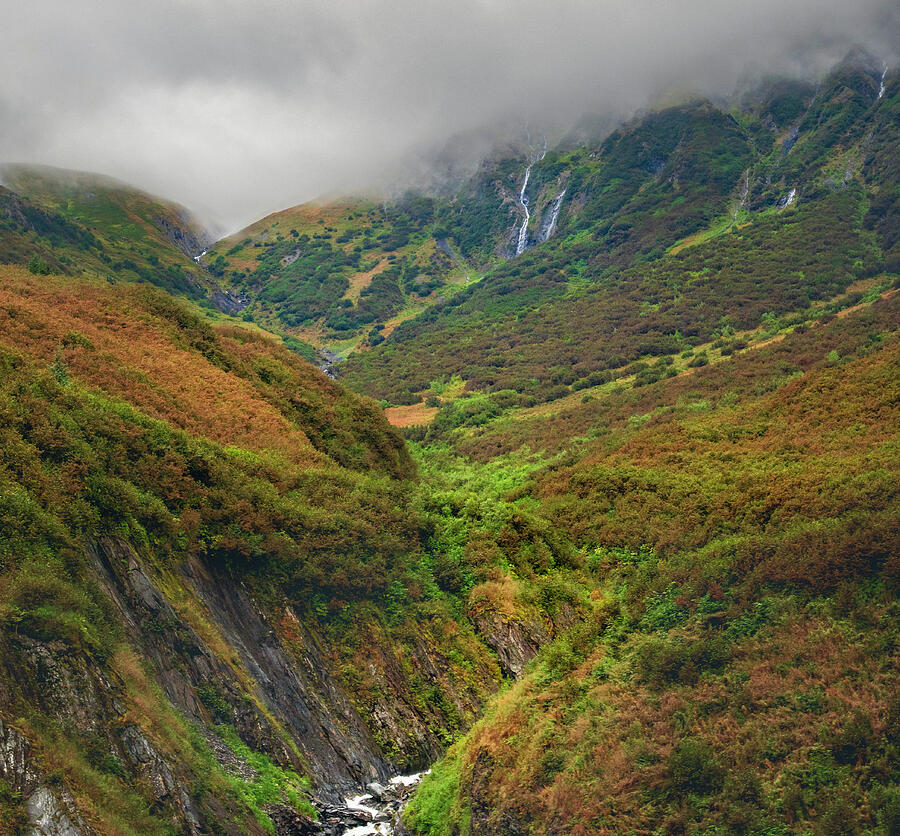
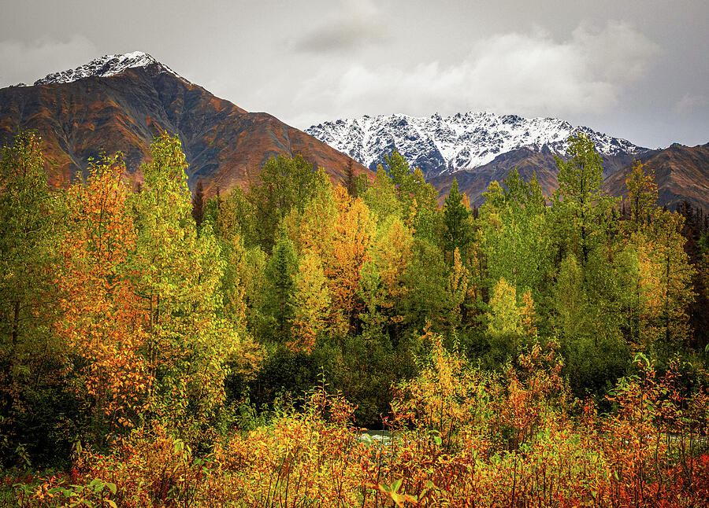
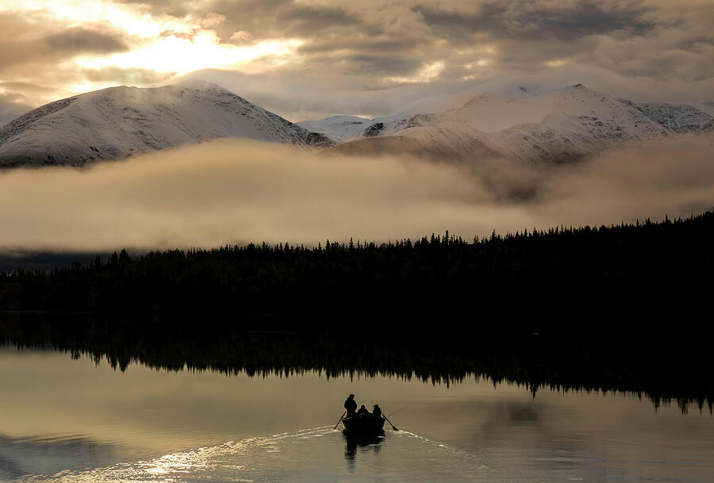
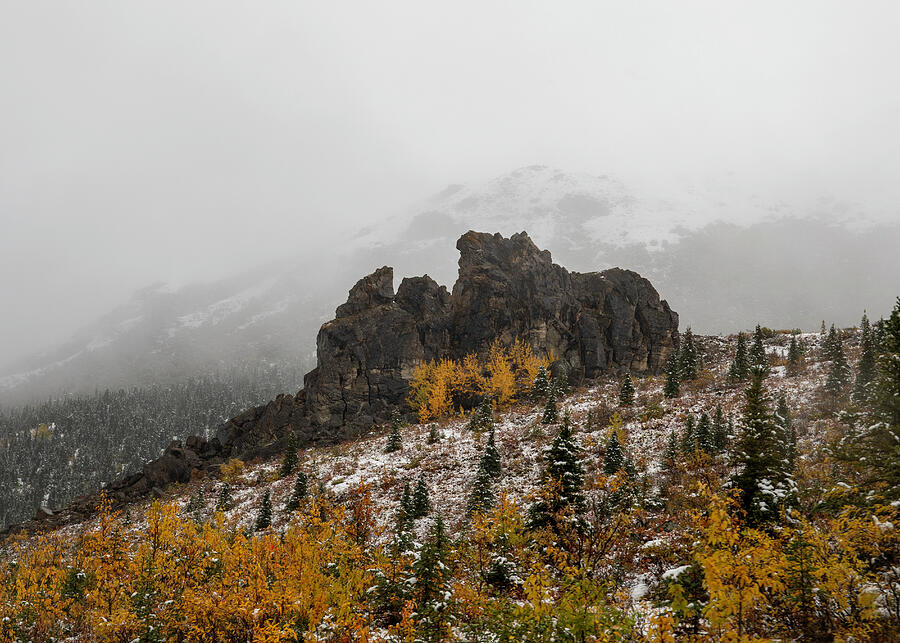
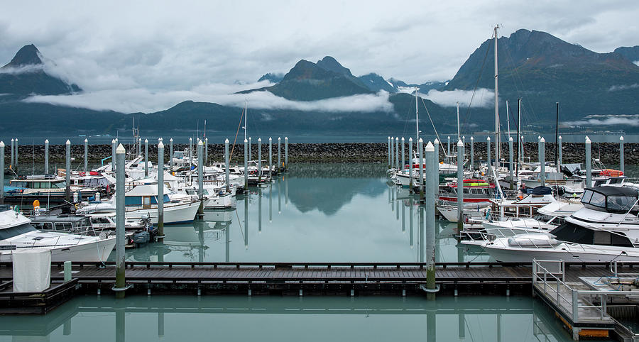
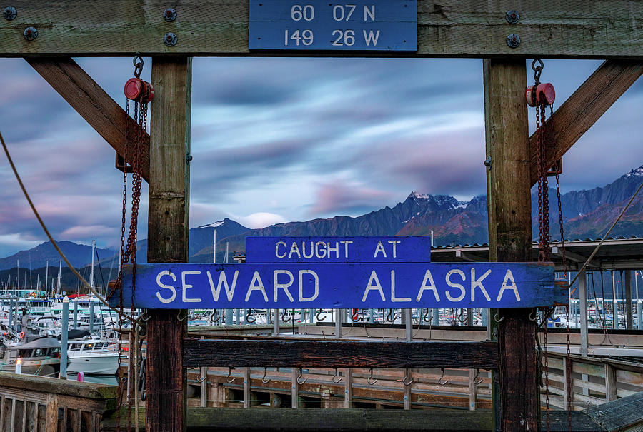
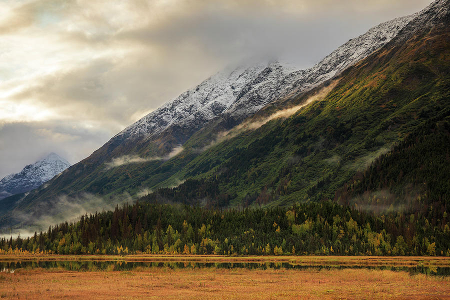

Living Rooms & Fireplaces
Choose larger mountain, waterfall, glacier, or autumn prints when the artwork needs to anchor a sofa, stone fireplace, or main wall.
Alaska Photography Prints
Shop Alaska landscape photography by Dan Sproul, including mountain valleys, waterfalls, harbors, autumn color, glaciers, and quiet northern light for living rooms, bedrooms, offices, lodges, wellness spaces, and hospitality interiors.
Featured Alaska Prints
These pieces are selected for buyers who want Alaska artwork with atmosphere, scale, and a clear place in a room. Click any print to choose size, frame, canvas, metal, acrylic, or paper options in the secure print storefront.

Mountain Valley Waterfalls
Low clouds, green mountain slopes, and distant waterfalls create a quiet immersive Alaska scene.
Best for: bedrooms, offices, wellness rooms, cabins, and calm statement walls.
Shop This Print →
Warm Autumn Alaska
Golden fall color, snow-touched peaks, and layered forest texture for warm natural interiors.
Best for: living rooms, cabins, lodge interiors, fireplace walls, and mountain homes.
Shop This Print →
Quiet Alaska Water
A small boat, reflective water, and soft mountain light create a peaceful Alaska story.
Best for: cabins, lake homes, bedrooms, dens, fishing lodges, and rustic offices.
Shop This Print →
Denali Autumn Print
Rock forms, snow, mist, and gold autumn color give this print a rugged but quiet presence.
Best for: offices, cabins, reading rooms, entryways, and refined rustic interiors.
Shop This Print →
Coastal Harbor Atmosphere
Boats, reflections, mist, and mountain silhouettes bring a coastal Alaska feeling into a room.
Best for: offices, lake houses, coastal rooms, guest rooms, and hospitality spaces.
Shop This Print →
Alaska Waterfall Print
Layered whitewater, dark rock, and green mountainside texture create a strong natural focal point.
Best for: wellness rooms, bathrooms, lodge halls, living rooms, and vertical walls.
Shop This Print →
Alaska Travel Memory
A character-rich Seward harbor scene for buyers who want Alaska identity and a sense of place.
Best for: cabins, rentals, game rooms, offices, entryways, and Alaska-themed spaces.
Shop This Print →
Moody Mountain Light
Snowy peaks, autumn color, low clouds, and warm light create a dramatic but livable Alaska print.
Best for: sofas, fireplace walls, lodges, offices, and large residential statement walls.
Shop This Print →Quick Size Guide
Alaska images usually look best when they have room to breathe. These simple starting points help most buyers narrow the choice before opening the print page.
Need help choosing? Send a room photo or wall dimensions and I’ll suggest a size and format direction.
Choose By Room Or Mood
Most buyers do not need to start with a specific location. Start with the room, the wall size, and the mood you want the print to create.
Choose larger mountain, waterfall, glacier, or autumn prints when the artwork needs to anchor a sofa, stone fireplace, or main wall.
Warm Chugach autumn color, rugged Denali scenes, fishing boats, and textured mountain landscapes pair naturally with wood, leather, stone, and timber.
Low clouds, harbor reflections, soft water, and restrained mountain light work well where the print should feel calm instead of loud.
Moody mountains, glaciers, harbors, and refined Alaska landscapes add depth and focus without making a work space feel busy.
Waterfalls, glacial water, mist, and green valleys bring a restorative feeling to bathrooms, therapy rooms, waiting areas, and wellness interiors.
Seward, Valdez, Chugach, Denali, and Kenai River imagery can give guest rooms, lobbies, corridors, and rentals a stronger regional identity.
Photographed Throughout Alaska
These Alaska prints come from firsthand travel through mountain valleys, coastal harbors, glacial landscapes, autumn forests, waterfalls, and rapidly changing northern weather. They are not generic mountain decor.
The goal is to help a room feel more grounded: a quieter bedroom, a warmer cabin, a stronger office wall, a memorable lodge interior, or a hospitality space with a real sense of place.
Dan’s Note: Alaska changes quickly. Fog, rain, snow, autumn color, and shifting light often create the softer atmosphere that makes these images easier to live with as large wall art.
Why Alaska Works In Interiors
Alaska artwork can feel expansive without becoming visually chaotic. Mountains, waterfalls, harbors, autumn valleys, and glacial water bring depth into a room while still supporting calm residential, lodge, wellness, office, and hospitality interiors.
Interior Anchor
For homes and hospitality spaces, Alaska artwork can create a destination feeling without relying on generic mountain decor. The right image gives a wall memory, depth, and atmosphere.
Use autumn mountains for warmth, waterfalls for restoration, harbors for coastal calm, and darker mountain scenes for offices or rooms that need quiet strength.
Artwork In Interior Spaces
These mockups show how Alaska landscape photography can work in healthcare, hospitality, office, lodge, and residential interiors. Click any mockup to enlarge it and open the related print.
Wellness & Healthcare
Soft Alaska river and mountain imagery for spaces that need a restorative, quiet focal point.
Cabins & Lodges
Large-format glacier photography paired with layered wood, stone, and mountain lodge architecture.
Office & Monochrome
Black-and-white Alaska imagery for rooms that need strength, depth, and restraint.
Autumn Alaska
Earth-toned Alaska landscapes naturally complement fireplaces, wood finishes, and mountain homes.
Entryways & Halls
Soft mountain and lake imagery creates calm movement in entryways, halls, and refined residential spaces.
Wildlife & Lodge Interiors
Large-scale Alaska wildlife photography for lodges, mountain homes, and hospitality spaces.
Executive Offices
Architectural black-and-white glacier imagery for sophisticated offices and modern commercial interiors.
Alaska Locations Featured
The page is organized for buyers by room and mood, but these location notes help explain the atmosphere behind the prints without sending you away from the artwork.
Autumn color, snow-touched peaks, clouds, forests, and mountain valleys create warm Alaska artwork for cabins, living rooms, and lodge interiors.
Harbors, waterfalls, glacial water, and dramatic coastal weather give these images a softer, moodier Alaska feeling.
Seward imagery brings travel memory, harbor character, and regional identity to rentals, guest rooms, offices, and Alaska-themed spaces.
Rock forms, tundra color, snowfall, and open scale create artwork that feels rugged, quiet, and spacious.
Fishing boats, reflective water, and mountain light work especially well in cabins, lake houses, dens, and quiet rooms.
Vertical cascades and low clouds are strong choices for wellness spaces, bathrooms, lodge corridors, and walls that need natural movement.
Field note: I keep the buying path focused on the artwork rather than external travel links. Location context is useful, but the main goal is helping you choose a print that fits the room, wall scale, and feeling you want.
Alaska Artwork FAQ
Start with the room mood. Choose softer harbor, water, or misty mountain scenes for calm spaces, and choose waterfalls, autumn valleys, or glacier scenes for stronger focal walls.
24×36 works well for smaller rooms, 30×40 or 32×48 fits many offices and bedrooms, and 40×60 or larger is best above sofas, fireplaces, king beds, and hospitality walls.
Yes. Product pages in the print storefront show available sizes, paper, canvas, metal, acrylic, mat, and frame options depending on the image.
Yes. Send a room photo, wall dimensions, or project direction and I can suggest Alaska artwork, size, format, and placement options.